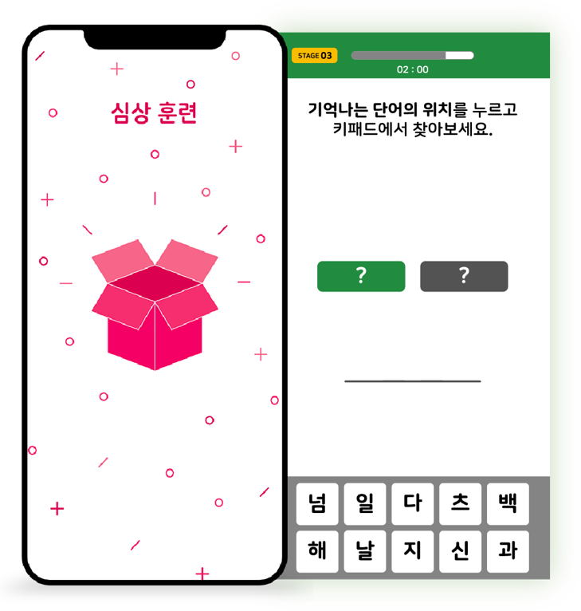

고령자 치매 예방을 위한
모바일 앱 게임 개발
작업기간
2019.09 -2019.12
프로젝트 구성원
네이버 클로바, 병원 관계자,
GUI 기획자, 개발자
작업 툴
Illustrator
Photoshop
Protopie
Zeplin
00 Overview
치매의 가능성이 있는 고령자를 타겟으로 한 모바일 게임 앱입니다. 게임이라는 형식을 통해 재미의
요소를 더하고, 집중력과 암기력을 향상시킬 수 있도록 유도하여 치매를 예방할 수 있도록 합니다.
01 Project Goal
고령층이 많아지고 있는 고령화시대에 살고 있지만 고령층이 갖고 있는 어려움과 문제들은 많아집니다.
그 중 중대한 문제인 치매 문제를 갖고 미리 예방할 수 있는 방법을 게임이라는 포맷으로 제공하기 위한
방안을 모색하였습니다.
02 My Position
게임 시나리오를 모바일로 구현할 수 있도록 하는 GUI 기획을 담당하였습니다. 일러스트레이터와 개발자,
치매 전문가와 소통하며 치료의 기능을 효율적으로 구현하고, GUI를 실제 개발할 수 있도록 하였습니다.
03 Design Process
1) 타켓층 파악
치매 예방 단계에서 중요시 여겨야 할 요소를 파악하고 고령층의 모바일 이용에 대해 고려해야 할 점들을
인지하였습니다.
2) 게임 시나리오 분석
게임의 형식으로 제공될 치매 예방 치료에 대해 게임 시나리오를 분석하고, 게임의 구성 요소와 해당 요소의
쓰임을 파악하였습니다.
3) UX/UI 도출 및 구현
게임 시나리오에 따라 필요한 게임 제공 방식과 각 게임에 필요한 화면들을 구상하고 실제 구현하였습니다.
05 Design Details

심상 훈련
단어 목록이 주어지고, 각 단어에 해당되는 그림이 바로 주어져 해당 단어와
그림의 위치를 기억하면서 암기력을 키우는 훈련입니다.
 연합 훈련
연합 훈련
Locus와 Loci를 정하여, 서로 연합하여 단어를
외우며 암기력을 키우는 훈련입니다.
주의력 훈련
떨어지는 단어들 속에서 주어진 카테고리에 속하는 단어를 발견하게 하여
빠르게 선택하면서 주의력을 키우는 훈련입니다.
그 외 화면들
게임 스테이지 별 진행도, 남은 시간이 각 화면에
구성되어 있으며, 훈련 결과 화면으로 각 게임의
이행 정도를 확인할 수 있도록 하였습니다.
CONTACT
Tel. 010 5374 5459
Mail. starrgirl1001@gmail.com